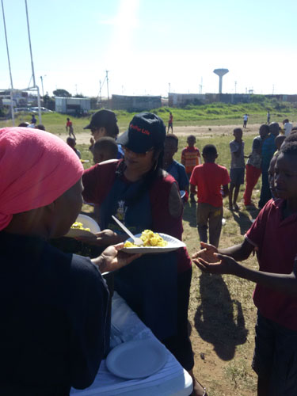
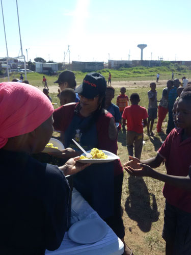

Food For Life South Africa
Creating a Hunger-Free South Africa
Creating a Hunger-Free South Africa
üìû Contact: B. Ramnunan (FFL Coordinator / Treasurer - Bimal)
üì± Phone: 083 233 8322
üìß Email: bimalramnuan@gmail.com
All volunteers are welcome to assist in fundraising, cleaning of ingredients, and distribution of cooked meals.
ü•™ Feeding Programs: Food for Life East London distributes sandwiches and juice, soup, and bread every Wednesday, as well as monthly feeding programs.
ü•´ Food Drop-off Point: 30 Alpine Road, Braelyn, East London
Arrangements can also be made for collection.
Team East London carried out a large-scale feeding program at the SS Aylum Temple in Braelyn, East London.
The team served a sumptuous lunch to temple members and local residents, ensuring that everyone received a warm and nourishing meal.
A total of 500 plates were served, spreading kindness and care to the community. ❤️
For over three years, Team East London has been dedicated to providing sandwiches and juice/soup to the children of Parkridge and Parkside. Every week, up to 100 kids gather to receive their meals, and with the start of the cold season, the demand for hot soup has increased. Show your support by sponsoring a soup and bread feeding or joining us for our weekly or monthly feeding programs. Together, we can make a difference! ❤️
On 27 May 2017, Team East London conducted a feeding program in Mdantsane NU16, bringing joy and nourishment to the community.
Residents and children were treated to a delicious samp and bean with soya meal, accompanied by refreshing fruit juice.
The team received a warm welcome, and the atmosphere was filled with excitement and smiles. This marked the first feeding in this township, making it a truly special event.
A total of 500 plates were served, spreading love and care to those in need. ❤️
On 29 April 2017, Team East London carried out a large-scale feeding program at Nompumelelo Settlement and Parkside, serving a total of 800 plates across both venues. Residents and children were treated to a delicious biryani meal accompanied by refreshing fruit juice, bringing smiles and joy to the community.
On 28 January 2017, Team East London carried out a feeding program at Nompumelelo Settlement in Beacon Bay. The team set out in full force to provide a sumptuous lunch of samp and beans with soya, along with refreshing fruit juice. The children truly enjoyed their meals, and a total of 800 plates were served, bringing joy and nourishment to the community. ❤️
üóìÔ∏è SS AYLUM TEMPLE in BREALYN
üóìÔ∏è Parkridge and Parkside Recent
üóìÔ∏è MDANTSANE NU16 27 May 2017
üóìÔ∏è NOMPUMELLELO SETTLEMENT AND PARKSIDE
 

üóìÔ∏è NOMPUMELELO settlement in Beacon bay

üåü Join us in spreading love and nourishment to those in need. Your support, whether through volunteering or donations, makes a huge impact!
B. Ramnunan ‚Äì FFL Coordinator / Treasurer (Bimal) üìû 083 233 8322 | ‚úâÔ∏è bimalramnuan@gmail.com
All volunteers are welcome to assist in fundraising, cleaning ingredients, and distributing cooked meals.
Food for Life East London provides sandwiches, juice, soup, and bread every Wednesday, as well as monthly feeding programs.
üìç Food Drop-off Point: 30 Alpine Road, Braelyn, East London. Arrangements can also be made for collection.
#CreatingAHungerFreeNation #Charity #Nonprofit #Donate #Love #Fundraising #Community #Support #Help #Volunteer #GivingBack #MakeADifference #Hope #Change #Philanthropy
For more information or to get involved, reach out to us:
Email: info@foodforlife.org.za Phone: +27 12 345 6789 Address: 123 Compassion Street, Midrand, South Africa